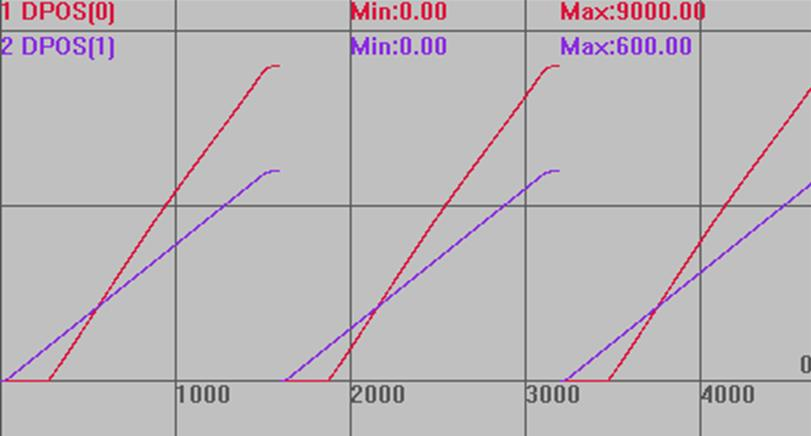
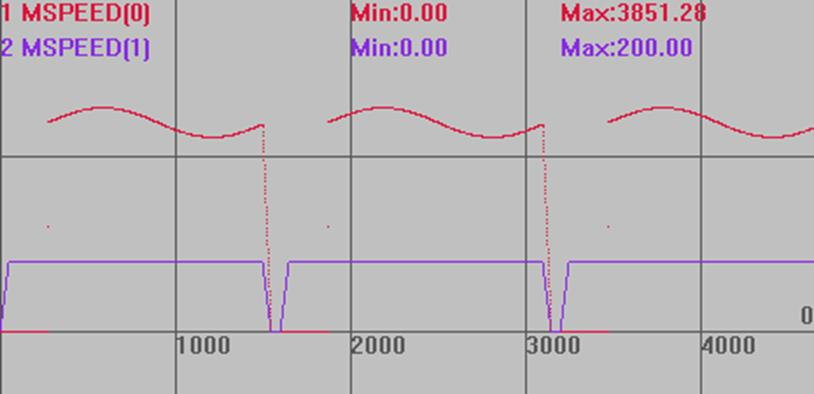

|
同步运动指令 | |||||||||||||||||||
|
描述 |
CAMBOX指令根据存储在TABLE中的数据来决定轴的运动，这些Table数据值对应运动轨迹的位置，是相对于运动起始点的距离。跟随轴的运动根据参考轴的运动来进行。 注：两个或多个CAMBOX指令可以同时使用同一段Table数据区进行操作。
当前轴运动的总时间由参考轴的运动距离和轴速度确定，速度自动匹配。 Table数据需要手动设置，第一个数据为引导点，建议设为0。 Table数据*table multiplier这个比例=发出的脉冲数。 请确保指令传递的距离参数*units是整数个脉冲，否则出现浮点数会导致运动有细微误差。 | ||||||||||||||||||
|
语法 |
CAMBOX(start_point, end_point, table_multiplier, link_distance , link_axis[, link_options][, link_pos][, link_offpos]) start point：起始点TABLE编号，存储第一个点的位置 end point：结束点TABLE编号 table multiplier：位置乘以这个比例，一般设为脉冲当量值 link_distance：参考轴运动的距离 link_axis：参考轴轴号 link_options：与参考轴的连接方式，不同的二进制位代表不同的意义
link_pos：当link_options参数设置为2时，该参数表示连接开始启动的绝对位置 link offpos：当link_options参数bit4置为1时，该参数表示主轴已经运行完的相对位置 | ||||||||||||||||||
|
适用控制器 |
通用 | ||||||||||||||||||
|
例子 |
ERRSWITCH = 3 RAPIDSTOP(2) WAIT IDLE(0) WAIT IDLE(1) BASE(0,1) '选择轴号 ATYPE=1,1 '脉冲方式步进或伺服 DPOS = 0,0 UNITS = 100,100 '脉冲当量 SPEED = 200,200 ACCEL = 2000,2000 DECEL = 2000,2000 '计算TABLE的数据 DIM deg, rad, x, stepdeg stepdeg = 2 '可以通过这个来修改段数，段数越多速度越平稳 FOR deg=0 TO 360 STEP stepdeg rad = deg * 2 * PI/360 '转换为弧度 x = deg * 25 + 10000 * (1-COS(rad))/100 TABLE(deg/stepdeg,x) '存储TABLE TRACE deg/stepdeg,x NEXT deg TRIGGER '自动触发示波器 WHILE 1 '循环运动 IF IN(0) = ON THEN '输入0有效启动运动 DPOS = 0,0 CAMBOX(0,360/stepdeg, 100, 500, 1,2,100) AXIS(0) '参考轴轴1运动到100位置时，跟随轴轴0启动 MOVE(600) AXIS(1) WAIT UNTIL IDLE AND IDLE(1) '等待运动停止 DELAY(100) '延时 ENDIF WEND END '停止当前任务
运动轨迹 DPOS(0)垂直刻度5000 DPOS(1)垂直刻度500 
速度曲线 MSPEED(0)垂直刻度3000 MSPEED(1)垂直刻度500  | ||||||||||||||||||
|
相关指令 |